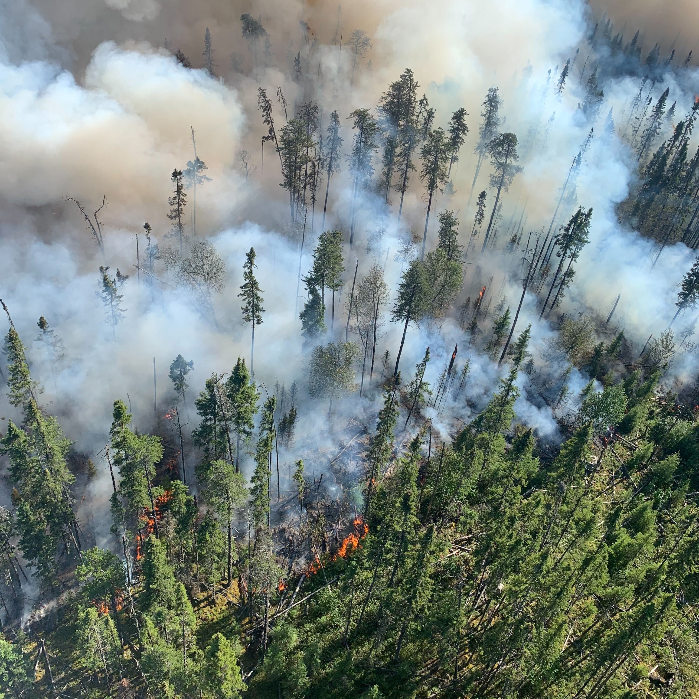
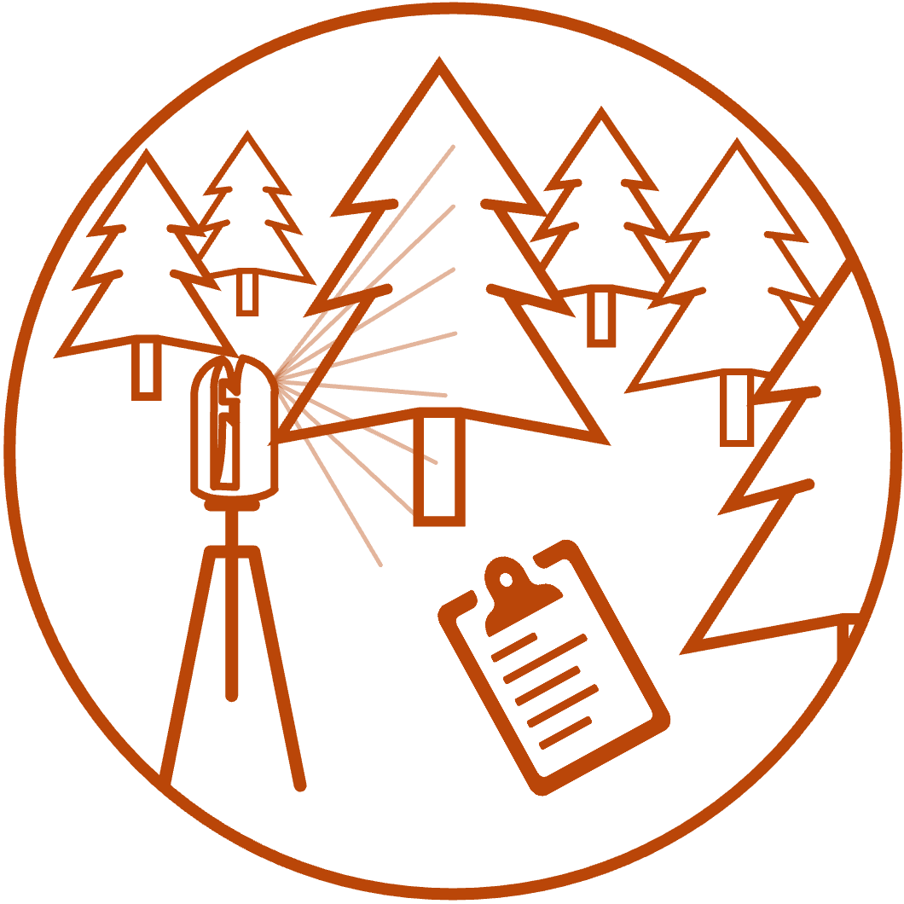
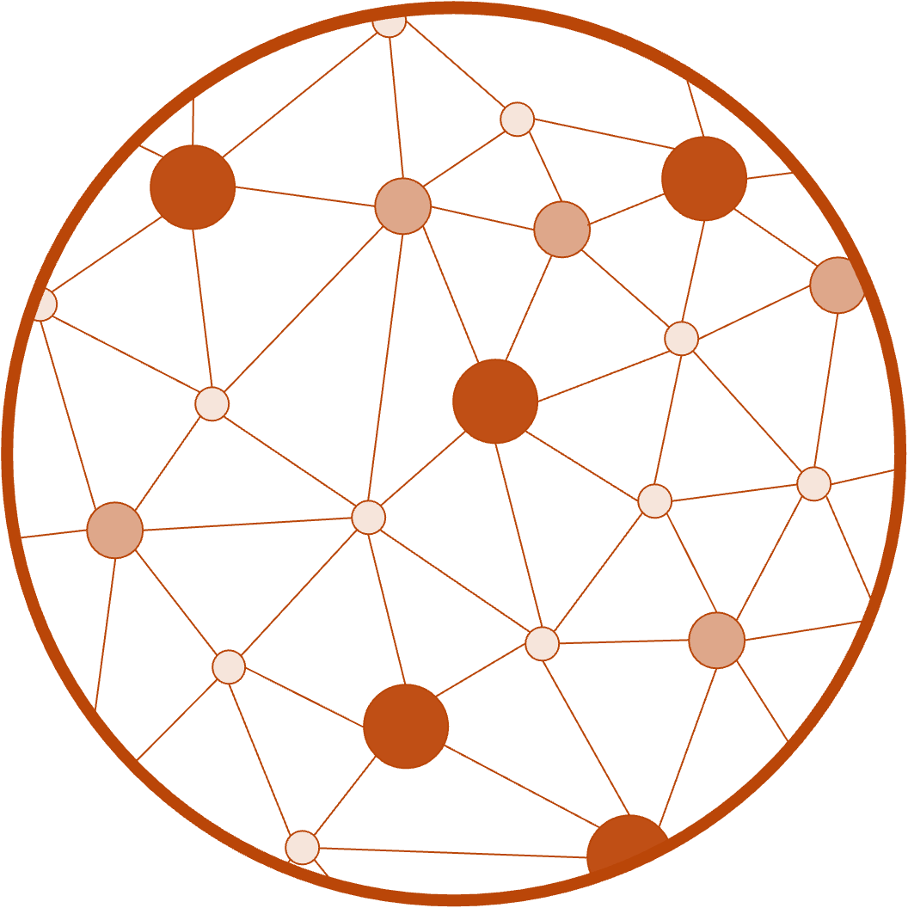
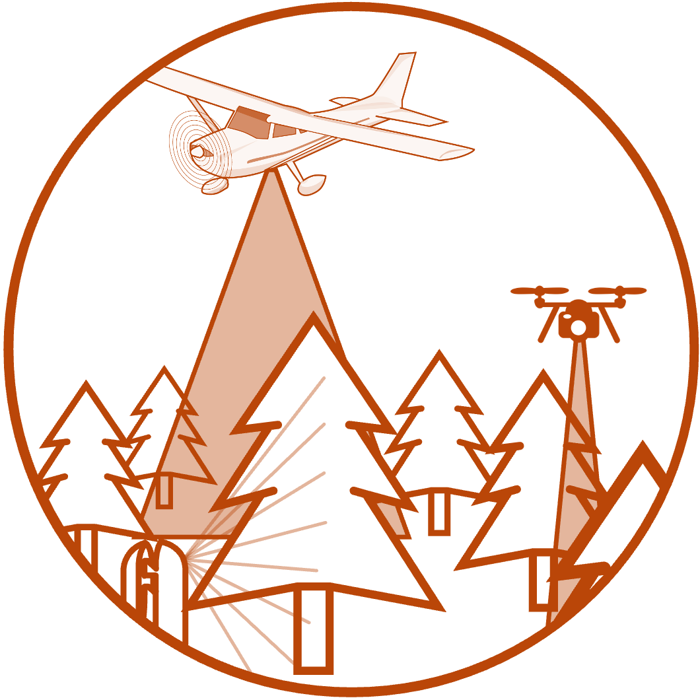
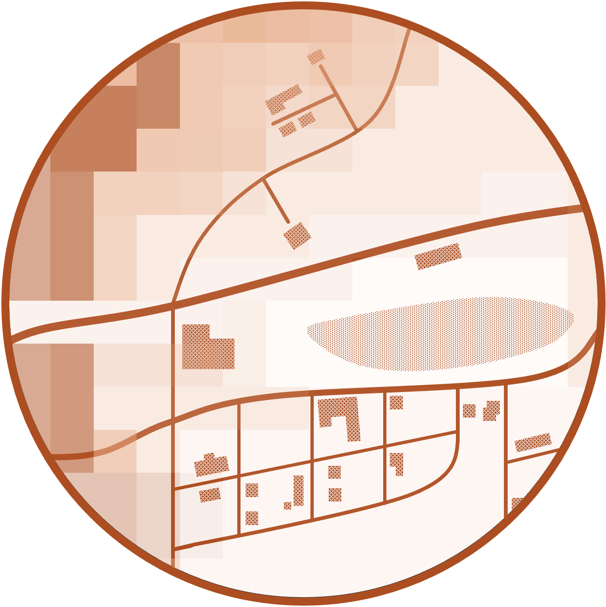
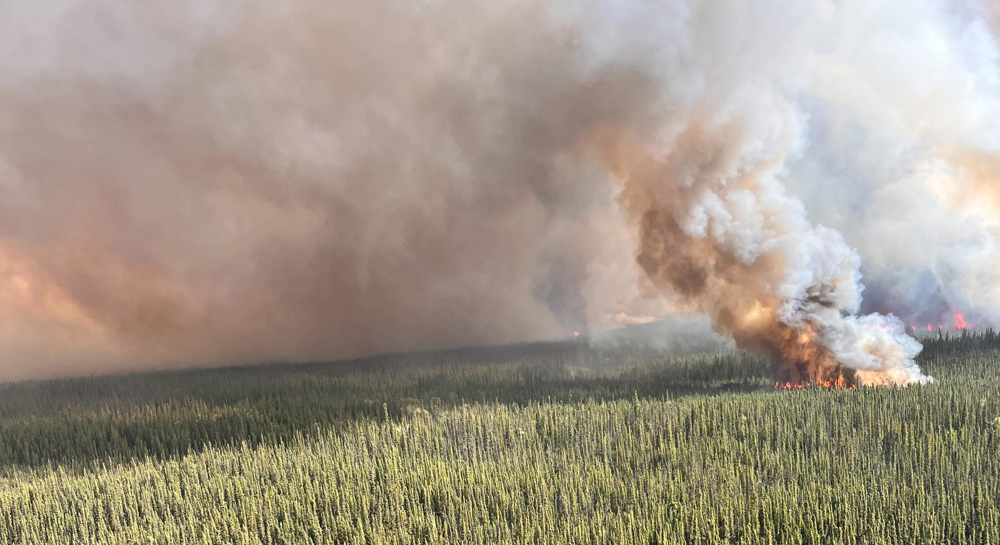

Moulay Akhloufi
Université de Moncton
image credit: xxxxx

Wildfire activity is increasing in Canada due to climate change, posing a significant threat to ecosystems, communities and infrastructure.
Proactive wildfire risk assessment and mitigation strategies are necessary to better understand and respond to these changes.
Central to fire mitigation strategies are the characterization of forest fuels (combustible vegetation, litter, and wood debris) and methods to link those fuels to expected fire behaviour (e.g. fire intensity, rate of spread).
Funded through Natural Resources Canada’s Wildfire Resilient Futures Initiative (WRFI), our research project aims to address the need to quantify fuel structures to improve understanding of fire behaviour in Canada’s changing forest environments.

Read more about them here.

Optimizing ground-based lidar protocols

Quantifying fuel connectivity

Upscaling from terrestrial to airborne lidar

Creating novel tools for risk assessment

See the full list of researchers working toward our goals here.